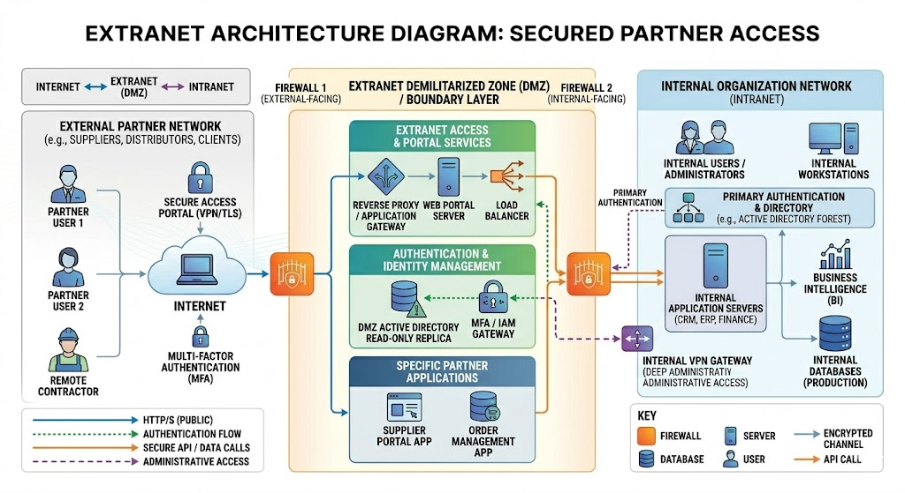

An extranet extends an intranet by granting controlled access to selected external parties — such as customers, suppliers, business partners, or contractors. It falls between the public Internet and a private intranet, using authentication and encryption to restrict access to authorized outsiders only.
Characteristics
- Accessible to selected external parties using login credentials or secure certificates
- used for B2B (business-to-business) collaboration and supply chain management
- Uses VPNs, firewalls, and authentication to protect sensitive data
Extranet Architecture Diagram
